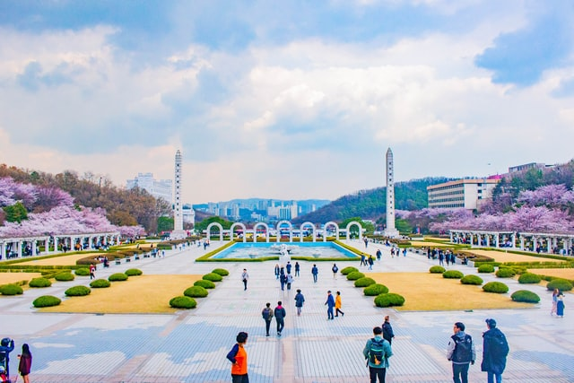

서울특별시 동대문구와 경기도 용인시, 경기도 남양주시에 있는 경희학원 산하 사립 종합대학교. 신흥무관학교의 후신이며, 경희라는 교명은 경희궁에서 따온 것이다.
서울캠퍼스와 경기도 용인의 국제캠퍼스, 경기도 남양주의 광릉캠퍼스는 이원화 캠퍼스이며, 서울캠퍼스는 인문·사회, 의약학, 기초과학, 순수예술 등의 순수학문으로, 국제캠퍼스는 공학·응용과학, 국제화, 현대예술·체육 등의 응용학문 위주로 특성화되어 있다. 광릉캠퍼스에는 평화복지대학원이 있다.
